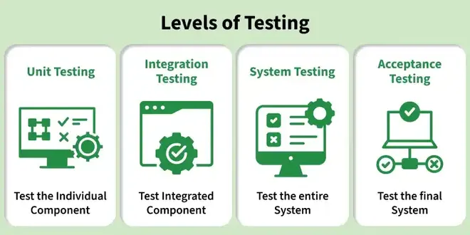

7.5–7.10 Levels of Testing
Software is tested at progressively broader levels as components are assembled into a complete system. Each level has a distinct scope, performer, and objective within the §2.1 SDLC testing phase and the §8.3 V&V framework.

Unit testing (7.5)
- Unit testing verifies individual components, functions, methods, or classes in isolation from the rest of the system.
- It is the first level of testing and is typically performed by developers during or immediately after coding.
- Unit tests commonly use white box techniques because developers have full access to source code and internal logic.
- The goal is to confirm that each unit behaves correctly for valid inputs, boundary inputs, and error conditions.
- Stubs and drivers are generally not needed at unit level because the unit is tested directly without depending on unwritten modules.
- Unit testing supports early defect detection and is the foundation for Test-Driven Development (TDD).
Integration testing (7.6)
- Integration testing verifies the interfaces and interactions between modules or subsystems after unit testing is complete.
- It is performed after unit testing and focuses on data flow, control flow, and API contracts between combined components.
- At the integration level, testing is often black box — testers verify behaviour through module interfaces without examining internal code.
- Integration testing can also use white box techniques when verifying internal interactions, call sequences, or shared data structures between modules.
- Integration strategies (top-down, bottom-up, sandwich) determine the order in which modules are combined — see §7.11–7.14 Testing Strategies.
- Stubs (for top-down) and drivers (for bottom-up) simulate missing modules during incremental integration.
System testing (7.7)
- System testing evaluates the complete, integrated system as a whole against specified requirements.
- It covers both functional requirements (what the system does) and non-functional requirements (how well it performs — performance, security, usability).
- System testing is conducted in an environment that closely resembles the real production environment — hardware, OS, network, and data volumes.
- It is typically performed by an independent test team rather than the development team to reduce bias.
- System testing validates end-to-end workflows, error recovery, and system-wide constraints before the product is released to users.
Acceptance testing (7.8)
- Acceptance testing validates the system against user requirements and business needs — the final gate before deployment.
- User Acceptance Testing (UAT) is performed by end users or customer representatives in a realistic operational setting.
- Alpha testing is conducted at the developer's site with a selected group of internal or external users before public release.
- Beta testing releases the product to a limited external user base in the real environment to gather feedback before general availability.
- Acceptance testing confirms that the right product has been built — a validation activity aligned with §8.3 V&V.
- Formal sign-off at acceptance testing authorises the system for production deployment.
Regression testing (7.9)
- Regression testing re-executes previously passed test cases after changes (bug fixes, enhancements, refactoring) to ensure existing functionality is not broken.
- It is not a separate level in the traditional hierarchy but a type of testing applied at every level whenever the codebase changes.
- Regression testing ensures that old functionality remains intact after modifications — a critical activity during maintenance — see also §10.4 Maintenance Categories.
- Automated regression test suites are common because manually re-running all tests after every change is impractical for large systems.
- Smoke tests (quick sanity checks of core features) and full regression suites are often run at different frequencies in CI/CD pipelines.
Unit testing vs system testing
| Dimension | Unit Testing | System Testing |
|---|---|---|
| Scope | Individual component, function, or class | Complete integrated system |
| Level | First level — lowest granularity | Third level — after unit and integration |
| Performed by | Developers | Independent test team |
| Primary technique | White box (code-level) | Black box (requirement-based) |
| Environment | Developer workstation / IDE | Production-like test environment |
| Stubs / drivers | Not typically needed | Not applicable — full system available |
| Focus | Internal logic, edge cases, error paths | End-to-end workflows, functional + non-functional requirements |
| When performed | During or immediately after coding | After integration testing is complete |
| Defect cost to fix | Low — found early | Higher — may require changes across modules |
| Automation | Highly automated (unit test frameworks) | Mix of automated and manual test cases |
Order of testing levels
The standard sequence of testing levels is:
- Unit testing — verify individual components in isolation.
- Integration testing — verify interfaces between combined modules.
- System testing — verify the complete system against requirements.
- Acceptance testing — validate the system against user and business needs.
- Regression testing runs at every stage whenever changes are made — it is not a separate step in this sequence but a cross-cutting activity.
- Defects found at lower levels are cheaper to fix; the testing pyramid emphasises many unit tests, fewer integration tests, and even fewer system/end-to-end tests.
testing_levels_flow.pseudo
PROCEDURE execute_testing_levels(system):
// Level 1 — Unit Testing (developers, white box)
FOR EACH module IN system.modules:
unit_results = run_unit_tests(module)
IF unit_results.has_failures THEN
fix_defects_and_retest(module)
END IF
END FOR
// Level 2 — Integration Testing (interfaces between modules)
integrated = combine_modules(system.modules, strategy="top_down_or_bottom_up")
integration_results = run_integration_tests(integrated)
IF integration_results.has_failures THEN
fix_interface_defects_and_retest(integrated)
END IF
// Level 3 — System Testing (complete system, real-like environment)
deploy_to_test_environment(system)
system_results = run_system_tests(system) // functional + non-functional
IF system_results.has_failures THEN
fix_system_defects_and_retest(system)
END IF
// Level 4 — Acceptance Testing (user validation)
acceptance_results = run_uat(system, end_users)
IF acceptance_results.approved THEN
authorise_production_deployment(system)
ELSE
RETURN "release blocked — acceptance criteria not met"
END IF
// Cross-cutting — Regression Testing (after any change at any level)
ON ANY code_change:
run_regression_suite(previous_passed_tests)
END PROCEDUREExam question — Levels of Testing
Q: Describe unit, integration, system, acceptance, and regression testing. Compare unit and system testing. State the correct order of testing levels.
Model answer points:
- Unit: individual components; developer; white box; first level; stubs/drivers not needed.
- Integration: module interfaces; after unit; black box at interface level (can be white box for internal interactions).
- System: complete integrated system; functional + non-functional; real-like environment; independent test team.
- Acceptance: validate against user requirements; UAT; alpha (developer site) and beta (limited external release) are types.
- Regression: re-test after changes; ensure old functionality intact; automated suites common; cross-cutting activity.
- Order: Unit → Integration → System → Acceptance; regression at every level after changes.
- Unit vs system: scope (component vs whole system), performer (developer vs test team), technique (white vs black box).